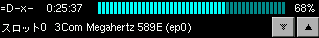
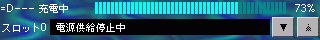

バッテリ&PCカードモニタ
PAO用のデスクトップアクセサリ。
ニュース
2000-01-23
xparent-20000123.tar.gzをリリース。shape extensionに対応。イベント配送処理を修正した。ソケットにconnect()を適用することで、sendto()の代わりにsend()を使用するようにした。強制終了時にソケットを削除するようにした。
2000-01-11
xparent-20000111.tar.gzをリリース。
特徴
X11R6の環境下で動作するXParent特徴は以下の通りです。
- ロケールにより国際化に対応
- cardmonとxbattの両方の機能を実現
スクリーンショット
AC電源なし/3Com Megahertz 589E挿入

AC電源あり・電源供給停止中・shape extension使用

ダウンロード・ビルド
最新版はxparent-20000123.tar.gzです。コンパイルするにはPAOがインストールされている必要があります。また、実行時にはAPMが有効化されている必要があります。
tar ballを展開後、環境に合うようにImakefileを編集してください。FreeBSDではNeedXPG4を定義するように変更します。shape extensionを使用しない場合は、次の行をコメントアウトしてください。
DUSE_SHAPE = -DUSE_SHAPE
あとはxmkmf -a ; makeで完了するはずです。
使用法
次のように起動します。
% setenv LANG ロケール名
% xrdb -merge リソースファイル
% xparentFreeBSDでは、実際には次のようになります。
% setenv LANG ja_JP.EUC
% xrdb -merge XParent.ad
% xparent
右端のボタンがカード無効化で、左ボタンがカード有効化です。shape extensionを使用している場合は、ウィンドウマネージャの設定を変更して、xparentのウィンドウ枠を描画しないようにしないと、画面のちらつきが激しいかもしれません。
リソース
全リソース一覧を用意しておきました。
サンプルのリソースファイルを参考に設定してください。